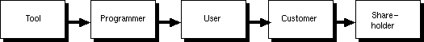
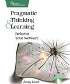
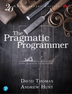

Toolshed Technologies
Andy Hunt. Author, Publisher,
Programmer, Musician.
The Spirit of the Tool
—Andy Hunt
05/01/1998
Published in Toolshed Newsletters
First off, an apology for my tardiness to my clients and others who look forward to this column. As many of you know, the Toolshed is moving to Raleigh, NC, and I have been swamped by the thousand details that involves. So, the next issue will probably be late too, between the unpacking, re-wiring, and so on. But enough about us. What’s this about the spirit of a tool?
Hand Tools
There’s a saying that the spirit of a tool carries through its lifetime, and affects the work produced by it.
Using woodworking as an example then, does a finely crafted rosewood and brass hand plane really do a better job than a mass produced Stanley plane from your local hardware store? Yes. But why? Is it just the difference in materials and workmanship? Or does the craftsman use the tool better simply because he or she perceives it as being a better tool? The singing, easy elegance of a finely crafted hand plane as it glides through the wood inspires the craftsman to produce a finer piece. Conversely, the frustration of a not-quite-tuned mass produced plane that chatters and tears the wood is enough to convince most people that the whole tool isn’t worth the effort. But there’s more to it than just a better made tool, there’s your relationship to it.
Before mass produced tools became available just after the American Civil War, most people made their own – at least in part. As a typical example, writer Eric Sloane [SLOANE] notes that axes “were so subtly curved and proportioned that they were as distinctive as a man’s signature”.
You would buy the axe head from the local blacksmith, and then carve your own handle to fit your hand, and your swing, and your height, and your tastes.
Sloane goes on to suggest that “For, like the nails on a beast’s paws, the old tools were so much an extension of a man’s hand or an added appendage to his arm, that the resulting workmanship seemed to flow directly from the body of the maker and to carry something of himself into the work.”
Now along came mass produced tools. Much cheaper, much more affordable (maybe you could afford a dozen axes in your lifetime, instead of one), but no longer custom made. No longer distinguishable, no longer a perfect match to the users hand.
In a way, this is analogous to what has happened to the software industry. The bloated office suites (nothing like a 400Mhz Pentium and 256MB of RAM just to write a memo) offer incredible functionality and a dizzying array of features, at a very low cost. But, as with most shrink-wrapped software, you must make some concessions – it’s no longer a perfect fit. You must shoehorn yourself, and your business, into the product’s capabilities. If you don’t like the way a product handles a particular feature, too bad. You may have some limited capability to customize it, but probably not a lot. Still, it’s better than doing it by hand, so you make do.
Not everyone can afford custom made software in the same way that not every woodworker can afford or custom made hand planes, or their custom axe anymore.
As software professionals, why do we make do with inferior tools? We have the capability to “carve our own axe handles”, uniquely making the tools ours to enhance productivity. But now here’s the point: it doesn’t do you any good to make a really nifty axe handle for yourself unless your customer benefits.
Harmonic Amplification
As with the rosewood plane, I believe there is a kind of harmonic amplification; a positive feedback loop that occurs from using an elegant, beautiful, uniquely tailored tool in the hands of a pro to create an elegant, beautiful user application tailored to the hands of the user.
However, this does not seem to be the case at present. Virtually every cubicle in North America (and a good many overseas) features a Dilbertian Shrine celebrating the UN-usability of software, the failure of business process re-engineering, the shortsightedness of strategic planning that only looks to the next quarter’s profit. While comforting to many to realize that the issues faced within their organization are not unique, what sort of mood does Dilbert set? Resignation? Acceptance of the status quo of mediocrity? I say fight back with elegance!
Why bother? So what if I make my little software widget really elegant and beautiful, who cares? What difference will it make?
Well, a developer-centric view of the Business Food Chain might look something like this:

I posit that if the positive feedback loop of elegance and excellence starts at the bottom of the food chain, then it can propagate all the up to eventually produce shareholder value.
An elegant, thoughtful tool in the hands of a professional, thoughtful developer can and will produce an elegant system, one that is:
- Uniquely tailored to the hands of a business user.
- Flexible in the face of constant change.
- Quickly adaptable to accommodate newly discovered business and technological needs.
The key here is that as soon as user discovers that he is shoehorning himself or his business into an application that doesn’t quite fit, then the application must grow. You may eventually outgrow a custom made axe (maybe you got taller); you will outgrow an application far more quickly. If the application can keep up with the unique and constantly changing needs of the user and the business, then user is extracting the maximum value from the system.
When that happens, then the user’s customer base can be well served – perhaps better served than the competitor’s. You have now achieved a competitive advantage, and that means shareholder value. The stock price shoots up, and your next project is funded, doves are released, rainbows appear in the sky, etc.
All because you decided to fight mediocrity. The spirit of the tool carries through its lifetime. Which spirit do you embrace?
References
- [SLOANE] Sloane, E. “A Museum of Early American Tools”
Ballantine Books, 1964.
Copyright © 1998,1999 Toolshed Technologies, Inc.
All Rights Reserved
Keep up to date with my low-volume newsletter and don't miss another article or fresh idea:
 
Latest News
-
New article: The Limits of Process
January 25, 2022 -
New article: Habits vs. Practices
January 5, 2022 -
New novel: Weatherly Hall
August 10, 2021 - List All News...
Recent Articles
-
The Limits of Process
January 25, 2022 -
Habits vs. Practices
January 5, 2022 -
Why Are There So Many Misconceptions Around Agile?
November 20, 2020 - List All Articles...
Upcoming and Recent Appearances
- Private Keynote, Fortune 500 company. Sep 30, 2020
- TDev Conference Keynote. Oct 3, 2020
- Private Keynote, Large Venture Capital firm. Oct 20, 2020
- DevOps Summit Keynote. Nov 7, 2020
- AgileMovement.it Keynote Nov 14, 2020
- Empowering Agile Fireside Chat, Feb 25, 2021
Email schedule@toolshed.com to book Andy for your next keynote or session.